Zeros of Polynomial Functions
A new bakery offers decorated, multi-tiered cakes for display and cutting at Quinceañera and wedding celebrations, as well as sheet cakes to serve most of the guests. The bakery wants the volume of a small sheet cake to be 351 cubic inches. The cake is in the shape of a rectangular solid. They want the length of the cake to be four inches longer than the width of the cake and the height of the cake to be one-third of the width. What should the dimensions of the cake pan be?
This problem can be solved by writing a cubic function and solving a cubic equation for the volume of the cake. In this section, we will discuss a variety of tools for writing polynomial functions and solving polynomial equations.
Evaluating a Polynomial Using the Remainder Theorem
In the last section, we learned how to divide polynomials. We can now use polynomial division to evaluate polynomials using the Remainder Theorem. If the polynomial is divided by the remainder may be found quickly by evaluating the polynomial function at that is, Let’s walk through the proof of the theorem.
Recall that the Division Algorithm states that, given a polynomial dividend and a non-zero polynomial divisor where the degree of is less than or equal to the degree of there exist unique polynomials and such that
If the divisor, is this takes the form
Since the divisor is linear, the remainder will be a constant, And, if we evaluate this for we have
In other words, is the remainder obtained by dividing by
Using the Remainder Theorem to Evaluate a Polynomial
Use the Remainder Theorem to evaluate at
Solution
To find the remainder using the Remainder Theorem, use synthetic division to divide the polynomial by
The remainder is 25. Therefore,
Using the Factor Theorem to Solve a Polynomial Equation
The Factor Theorem is another theorem that helps us analyze polynomial equations. It tells us how the zeros of a polynomial are related to the factors. Recall that the Division Algorithm tells us
If is a zero, then the remainder is and or
Notice, written in this form, is a factor of We can conclude if is a zero of then is a factor of
Similarly, if is a factor of then the remainder of the Division Algorithm is 0. This tells us that is a zero.
This pair of implications is the Factor Theorem. As we will soon see, a polynomial of degree in the complex number system will have zeros. We can use the Factor Theorem to completely factor a polynomial into the product of factors. Once the polynomial has been completely factored, we can easily determine the zeros of the polynomial.
Using the Factor Theorem to Solve a Polynomial Equation
Show that is a factor of Find the remaining factors. Use the factors to determine the zeros of the polynomial.
Solution
We can use synthetic division to show that is a factor of the polynomial.
The remainder is zero, so is a factor of the polynomial. We can use the Division Algorithm to write the polynomial as the product of the divisor and the quotient:
We can factor the quadratic factor to write the polynomial as
By the Factor Theorem, the zeros of are –2, 3, and 5.
Using the Rational Zero Theorem to Find Rational Zeros
Another use for the Remainder Theorem is to test whether a rational number is a zero for a given polynomial. But first we need a pool of rational numbers to test. The Rational Zero Theorem helps us to narrow down the number of possible rational zeros using the ratio of the factors of the constant term and factors of the leading coefficient of the polynomial
Consider a quadratic function with two zeros, and By the Factor Theorem, these zeros have factors associated with them. Let us set each factor equal to 0, and then construct the original quadratic function absent its stretching factor.
![This image shows x minus two fifths equals 0 or x minus three fourths equals 0. Beside this math is the sentence, 'Set each factor equal to 0.' Next it shows that five x minus 2 equals 0 or 4 x minus 3 equals 0. Beside this math is the sentence, 'Multiply both sides of the equation to eliminate fractions.' Next it shows that f of x is equal to (5 x minus 2) times (4 x minus 3). Beside this math is the sentence, 'Create the quadratic function, multiplying the factors.' Next it shows f of x equals 20 x squared minus 23 x plus 6. Beside this math is the sentence, 'Expand the polynomial.' The last equation shows f of x equals (5 times 4) times x squared minus 23 x plus (2 times 3).](../../media/CNX_Precalc_Figure_03_03_022-8ddb.jpg)
Notice that two of the factors of the constant term, 6, are the two numerators from the original rational roots: 2 and 3. Similarly, two of the factors from the leading coefficient, 20, are the two denominators from the original rational roots: 5 and 4.
We can infer that the numerators of the rational roots will always be factors of the constant term and the denominators will be factors of the leading coefficient. This is the essence of the Rational Zero Theorem; it is a means to give us a pool of possible rational zeros.
Listing All Possible Rational Zeros
List all possible rational zeros of
Solution
The only possible rational zeros of are the quotients of the factors of the last term, –4, and the factors of the leading coefficient, 2.
The constant term is –4; the factors of –4 are
The leading coefficient is 2; the factors of 2 are
If any of the four real zeros are rational zeros, then they will be of one of the following factors of –4 divided by one of the factors of 2.
Note that and which have already been listed. So we can shorten our list.
Using the Rational Zero Theorem to Find Rational Zeros
Use the Rational Zero Theorem to find the rational zeros of
Solution
The Rational Zero Theorem tells us that if is a zero of then is a factor of 1 and is a factor of 2.
The factors of 1 are and the factors of 2 are and The possible values for are and These are the possible rational zeros for the function. We can determine which of the possible zeros are actual zeros by substituting these values for in
Of those, are not zeros of 1 is the only rational zero of
Finding the Zeros of Polynomial Functions
The Rational Zero Theorem helps us to narrow down the list of possible rational zeros for a polynomial function. Once we have done this, we can use synthetic division repeatedly to determine all of the zeros of a polynomial function.
Finding the Zeros of a Polynomial Function with Repeated Real Zeros
Find the zeros of
Solution
The Rational Zero Theorem tells us that if is a zero of then is a factor of –1 and is a factor of 4.
The factors of are and the factors of are and The possible values for are and These are the possible rational zeros for the function. We will use synthetic division to evaluate each possible zero until we find one that gives a remainder of 0. Let’s begin with 1.
Dividing by gives a remainder of 0, so 1 is a zero of the function. The polynomial can be written as
The quadratic is a perfect square. can be written as
We already know that 1 is a zero. The other zero will have a multiplicity of 2 because the factor is squared. To find the other zero, we can set the factor equal to 0.
The zeros of the function are 1 and with multiplicity 2.
Analysis
Look at the graph of the function in Figure 1. Notice, at the graph bounces off the x-axis, indicating the even multiplicity (2,4,6…) for the zero At the graph crosses the x-axis, indicating the odd multiplicity (1,3,5…) for the zero
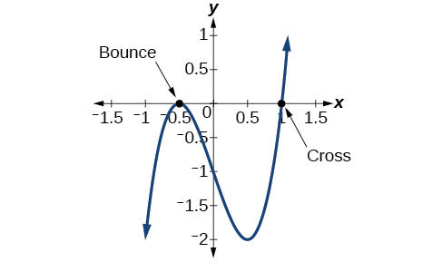
Using the Fundamental Theorem of Algebra
Now that we can find rational zeros for a polynomial function, we will look at a theorem that discusses the number of complex zeros of a polynomial function. The Fundamental Theorem of Algebra tells us that every polynomial function has at least one complex zero. This theorem forms the foundation for solving polynomial equations.
Suppose is a polynomial function of degree four, and The Fundamental Theorem of Algebra states that there is at least one complex solution, call it By the Factor Theorem, we can write as a product of and a polynomial quotient. Since is linear, the polynomial quotient will be of degree three. Now we apply the Fundamental Theorem of Algebra to the third-degree polynomial quotient. It will have at least one complex zero, call it So we can write the polynomial quotient as a product of and a new polynomial quotient of degree two. Continue to apply the Fundamental Theorem of Algebra until all of the zeros are found. There will be four of them and each one will yield a factor of
Finding the Zeros of a Polynomial Function with Complex Zeros
Find the zeros of
Solution
The Rational Zero Theorem tells us that if is a zero of then is a factor of 3 and is a factor of 3.
The factors of 3 are and The possible values for and therefore the possible rational zeros for the function, are We will use synthetic division to evaluate each possible zero until we find one that gives a remainder of 0. Let’s begin with –3.
Dividing by gives a remainder of 0, so –3 is a zero of the function. The polynomial can be written as
We can then set the quadratic equal to 0 and solve to find the other zeros of the function.
The zeros of are –3 and
Analysis
Look at the graph of the function in Figure 2. Notice that, at the graph crosses the x-axis, indicating an odd multiplicity (1) for the zero Also note the presence of the two turning points. This means that, since there is a 3rd degree polynomial, we are looking at the maximum number of turning points. So, the end behavior of increasing without bound to the right and decreasing without bound to the left will continue. Thus, all the x-intercepts for the function are shown. So either the multiplicity of is 1 and there are two complex solutions, which is what we found, or the multiplicity at is three. Either way, our result is correct.
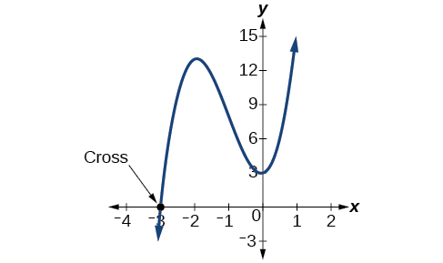
Using the Linear Factorization Theorem to Find Polynomials with Given Zeros
A vital implication of the Fundamental Theorem of Algebra, as we stated above, is that a polynomial function of degree will have zeros in the set of complex numbers, if we allow for multiplicities. This means that we can factor the polynomial function into factors. The Linear Factorization Theorem tells us that a polynomial function will have the same number of factors as its degree, and that each factor will be in the form where is a complex number.
Let be a polynomial function with real coefficients, and suppose is a zero of Then, by the Factor Theorem, is a factor of For to have real coefficients, must also be a factor of This is true because any factor other than when multiplied by will leave imaginary components in the product. Only multiplication with conjugate pairs will eliminate the imaginary parts and result in real coefficients. In other words, if a polynomial function with real coefficients has a complex zero then the complex conjugate must also be a zero of This is called the Complex Conjugate Theorem.
Using the Linear Factorization Theorem to Find a Polynomial with Given Zeros
Find a fourth degree polynomial with real coefficients that has zeros of –3, 2, such that
Solution
Because is a zero, by the Complex Conjugate Theorem is also a zero. The polynomial must have factors of and Since we are looking for a degree 4 polynomial, and now have four zeros, we have all four factors. Let’s begin by multiplying these factors.
We need to find a to ensure Substitute and into
So the polynomial function is
or
Analysis
We found that both and were zeros, but only one of these zeros needed to be given. If is a zero of a polynomial with real coefficients, then must also be a zero of the polynomial because is the complex conjugate of
Using Descartes’ Rule of Signs
There is a straightforward way to determine the possible numbers of positive and negative real zeros for any polynomial function. If the polynomial is written in descending order, Descartes’ Rule of Signs tells us of a relationship between the number of sign changes in and the number of positive real zeros. For example, the polynomial function below has one sign change.
This tells us that the function must have 1 positive real zero.
There is a similar relationship between the number of sign changes in and the number of negative real zeros.
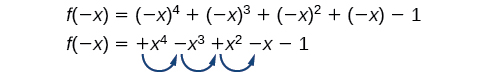
In this case, has 3 sign changes. This tells us that could have 3 or 1 negative real zeros.
Using Descartes’ Rule of Signs
Use Descartes’ Rule of Signs to determine the possible numbers of positive and negative real zeros for
Solution
Begin by determining the number of sign changes.
There are two sign changes, so there are either 2 or 0 positive real roots. Next, we examine to determine the number of negative real roots.
Again, there are two sign changes, so there are either 2 or 0 negative real roots.
There are four possibilities, as we can see in Table 1.
| Positive Real Zeros | Negative Real Zeros | Complex Zeros | Total Zeros |
|---|---|---|---|
| 2 | 2 | 0 | 4 |
| 2 | 0 | 2 | 4 |
| 0 | 2 | 2 | 4 |
| 0 | 0 | 4 | 4 |
Analysis
We can confirm the numbers of positive and negative real roots by examining a graph of the function. See Figure 5. We can see from the graph that the function has 0 positive real roots and 2 negative real roots.
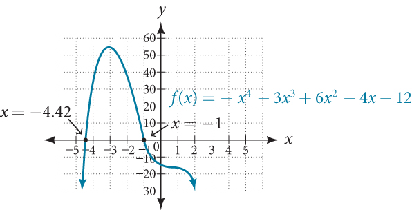
Solving Real-World Applications
We have now introduced a variety of tools for solving polynomial equations. Let’s use these tools to solve the bakery problem from the beginning of the section.
Solving Polynomial Equations
A new bakery offers decorated, multi-tiered cakes for display and cutting at Quinceañera and wedding celebrations, as well as sheet cakes to serve most of the guests. The bakery wants the volume of a small sheet cake to be 351 cubic inches. The cake is in the shape of a rectangular solid. They want the length of the cake to be four inches longer than the width of the cake and the height of the cake to be one-third of the width. What should the dimensions of the cake pan be?
Solution
Begin by writing an equation for the volume of the cake. The volume of a rectangular solid is given by We were given that the length must be four inches longer than the width, so we can express the length of the cake as We were given that the height of the cake is one-third of the width, so we can express the height of the cake as Let’s write the volume of the cake in terms of width of the cake.
Substitute the given volume into this equation.
Descartes' rule of signs tells us there is one positive solution. The Rational Zero Theorem tells us that the possible rational zeros are and We can use synthetic division to test these possible zeros. Only positive numbers make sense as dimensions for a cake, so we need not test any negative values. Let’s begin by testing values that make the most sense as dimensions for a small sheet cake. Use synthetic division to check
Since 1 is not a solution, we will check
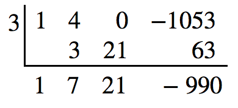
Since 3 is not a solution either, we will test
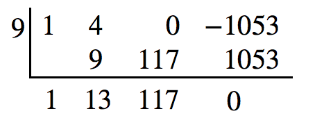
Synthetic division gives a remainder of 0, so 9 is a solution to the equation. We can use the relationships between the width and the other dimensions to determine the length and height of the sheet cake pan.
The sheet cake pan should have dimensions 13 inches by 9 inches by 3 inches.
Key Concepts
- To find determine the remainder of the polynomial when it is divided by See Example 1.
- is a zero of if and only if is a factor of See Example 2.
- Each rational zero of a polynomial function with integer coefficients will be equal to a factor of the constant term divided by a factor of the leading coefficient. See Example 3 and Example 4.
- When the leading coefficient is 1, the possible rational zeros are the factors of the constant term.
- Synthetic division can be used to find the zeros of a polynomial function. See Example 5.
- According to the Fundamental Theorem, every polynomial function has at least one complex zero. See Example 6.
- Every polynomial function with degree greater than 0 has at least one complex zero.
- Allowing for multiplicities, a polynomial function will have the same number of factors as its degree. Each factor will be in the form where is a complex number. See Example 7.
- The number of positive real zeros of a polynomial function is either the number of sign changes of the function or less than the number of sign changes by an even integer.
- The number of negative real zeros of a polynomial function is either the number of sign changes of or less than the number of sign changes by an even integer. See Example 8.
- Polynomial equations model many real-world scenarios. Solving the equations is easiest done by synthetic division. See Example 9.
Section Exercises
Verbal
Describe a use for the Remainder Theorem.
Solution
The theorem can be used to evaluate a polynomial.
Explain why the Rational Zero Theorem does not guarantee finding zeros of a polynomial function.
What is the difference between rational and real zeros?
Solution
Rational zeros can be expressed as fractions whereas real zeros include irrational numbers.
If Descartes’ Rule of Signs reveals a no change of signs or one sign of changes, what specific conclusion can be drawn?
If synthetic division reveals a zero, why should we try that value again as a possible solution?
Solution
Polynomial functions can have repeated zeros, so the fact that number is a zero doesn’t preclude it being a zero again.
Algebraic
For the following exercises, use the Remainder Theorem to find the remainder.
Solution
Solution
Solution
Solution
For the following exercises, use the given factor and the Factor Theorem to find all real zeros for the given polynomial function.
Solution
Solution
Solution
Solution
For the following exercises, use the Rational Zero Theorem to find all real zeros.
Solution
Solution
Solution
Solution
Solution
Solution
Solution
Solution
Solution
For the following exercises, find all complex solutions (real and non-real).
Solution
Solution
Solution
Graphical
For the following exercises, use Descartes’ Rule to determine the possible number of positive and negative solutions. Then graph to confirm which of those possibilities is the actual combination.
Solution
1 positive, 1 negative
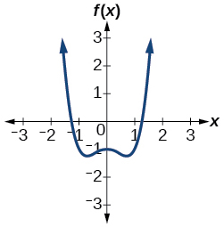
Solution
3 or 1 positive, 0 negative
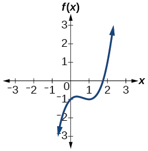
Solution
0 positive, 3 or 1 negative
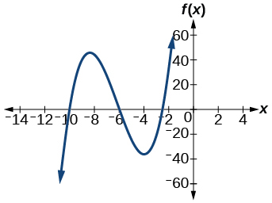
Solution
2 or 0 positive, 2 or 0 negative
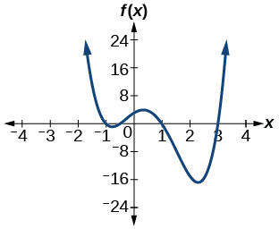
Solution
2 or 0 positive, 2 or 0 negative
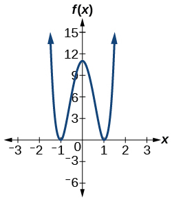
Numeric
For the following exercises, list all possible rational zeros for the functions.
Solution
Solution
Technology
For the following exercises, use your calculator to graph the polynomial function. Based on the graph, find the rational zeros. All real solutions are rational.
Solution
Solution
Solution
Extensions
For the following exercises, construct a polynomial function of least degree possible using the given information.
Real roots: –1, 1, 3 and
Real roots: –1, 1 (with multiplicity 2 and 1) and
Solution
Real roots: –2, (with multiplicity 2) and
Real roots: , 0, and
Solution
Real roots: –4, –1, 1, 4 and
Real-World Applications
For the following exercises, find the dimensions of the box described.
The length is twice as long as the width. The height is 2 inches greater than the width. The volume is 192 cubic inches.
Solution
8 by 4 by 6 inches
The length, width, and height are consecutive whole numbers. The volume is 120 cubic inches.
The length is one inch more than the width, which is one inch more than the height. The volume is 86.625 cubic inches.
Solution
5.5 by 4.5 by 3.5 inches
The length is three times the height and the height is one inch less than the width. The volume is 108 cubic inches.
The length is 3 inches more than the width. The width is 2 inches more than the height. The volume is 120 cubic inches.
Solution
8 by 5 by 3 inches
For the following exercises, find the dimensions of the right circular cylinder described.
The radius is 3 inches more than the height. The volume is cubic inches.
The height is one less than one half the radius. The volume is cubic meters.
Solution
Radius = 6 meters, Height = 2 meters
The radius and height differ by one meter. The radius is larger and the volume is cubic meters.
The radius and height differ by two meters. The height is greater and the volume is cubic meters.
Solution
Radius = 2.5 meters, Height = 4.5 meters
80. The radius is meter greater than the height. The volume is cubic meters.
Analysis
We can check our answer by evaluating